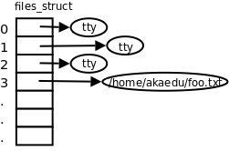

第 28 章 文件 与 I/O
从本章开始学习各种 Linux 系统函数，这些函数的用法必须结合 Linux 内核的工作原理来理解，因为系统函数正是内核提供给应用程序的接口，而要理解内核的工作原理，必须熟练掌握 C 语言，因为内核也是用 C 语言写的，我们在描述内核工作原理时必然要用「指针」、「结构体」、「链表」这些名词来组织语言，就像只有掌握了英语才能看懂英文书一样，只有学好了C语言才能看懂我描述的内核工作原理。读者看到这里应该已经熟练掌握了C语言了，所以应该有一个很好的起点了。我们在介绍C标准库时并不试图把所有库函数讲一遍，而是通过介绍一部分常用函数让读者把握库函数的基本用法，在掌握了方法之后，书上没讲的库函数读者应该自己查 Man Page 学会使用。同样，本书的第三部分也并不试图把所有的系统函数讲一遍，而是通过介绍一部分系统函数让读者理解操作系统各部分的工作原理，在有了这个基础之后就应该能够看懂 Man Page 学习其它系统函数的用法。
读者可以结合 APUE2e 学习本书的第三部分，该书在讲解系统函数方面更加全面，但对于内核工作原理涉及得不够深入，而且假定读者具有一定的操作系统基础知识，所以并不适合初学者。该书还有一点非常不适合初学者，作者不辞劳苦，在 N 多种 UNIX 系统上做了实验，分析了它们的内核代码，把每个系统函数在各种 UNIX 系统上的不兼容特性总结得非常详细，很多开发者需要编写可移植的应用程序，一定爱死他了，但初学者看了大段大段的这种描述（某某函数在 4.2BSD 上怎么样，到 4.4BSD 又改成怎么样了，在 SVR4 上怎么样，到 Solaris 又改成怎么样了，现在 POSIX 标准是怎么统一的，还有哪些系统没有完全遵守 POSIX 标准）只会一头雾水，不看倒还明白，越看越不明白了。也正因为该书要兼顾各种 UNIX 系统，所以没法深入讲解内核的工作原理，因为每种 UNIX 系统的内核都不一样。而本书的侧重点则不同，只讲 Linux 平台的特性，只讲 Linux 内核的工作原理，涉及体系结构时只讲 x86 平台，对于初学者来说，绑定到一个明确的平台上学习就不会觉得太抽象了。当然本书的代码也会尽量兼顾可移植性，避免依赖于 Linux 平台特有的一些特性。
1. 汇编程序的 Hello world
之前我们学习了如何用 C 标准 I/O 库读写文件，本章详细讲解这些 I/O 操作是怎么实现的。所有 I/O 操作最终都是在内核中做的，以前我们用的 C 标准 I/O 库函数最终也是通过系统调用把 I/O 操作从用户空间传给内核，然后让内核去做 I/O 操作，本章和下一章会介绍内核中 I/O 子系统的工作原理。首先看一个打印 Hello world 的汇编程序，了解 I/O 操作是怎样通过系统调用传给内核的。
例 28.1. 汇编程序的 Hello world
.data # section declaration
msg:
.ascii "Hello, world!\n" # our dear string
len = . - msg # length of our dear string
.text # section declaration
# we must export the entry point to the ELF linker or
.global _start # loader. They conventionally recognize _start as their
# entry point. Use ld -e foo to override the default.
_start:
# write our string to stdout
movl $len,%edx # third argument: message length
movl $msg,%ecx # second argument: pointer to message to write
movl $1,%ebx # first argument: file handle (stdout)
movl $4,%eax # system call number (sys_write)
int $0x80 # call kernel
# and exit
movl $0,%ebx # first argument: exit code
movl $1,%eax # system call number (sys_exit)
int $0x80 # call kernel
像以前一样，汇编、链接、运行：
$ as -o hello.o hello.s
$ ld -o hello hello.o
$ ./hello
Hello, world!
这段汇编相当于以下 C 代码：
#include <unistd.h>
char msg[14] = "Hello, world!\n";
#define len 14
int main(void)
{
write(1, msg, len);
_exit(0);
}
.data 段有一个标号 msg，代表字符串 "Hello, world!\n" 的首地址，相当于 C 程序的一个全局变量。注意在 C 语言中字符串的末尾隐含有一个 '\0'，而汇编指示 .ascii 定义的字符串末尾没有隐含的 '\0'。汇编程序中的 len 代表一个常量，它的值由当前地址减去符号 msg 所代表的地址得到，换句话说就是字符串 "Hello, world!\n" 的长度。现在解释一下这行代码中的「.」，汇编器总是从前到后把汇编代码转换成目标文件，在这个过程中维护一个地址计数器，当处理到每个段的开头时把地址计数器置成 0，然后每处理一条汇编指示或指令就把地址计数器增加相应的字节数，在汇编程序中用「.」可以取出当前地址计数器的值，该值是一个常量。
在 _start 中调了两个系统调用，第一个是 write 系统调用，第二个是以前讲过的 _exit 系统调用。在调 write 系统调用时，eax 寄存器保存着 write 的系统调用号 4，ebx、ecx、edx 寄存器分别保存着 write 系统调用需要的三个参数。ebx 保存着文件描述符，进程中每个打开的文件都用一个编号来标识，称为文件描述符，文件描述符 1 表示标准输出，对应于 C 标准 I/O 库的 stdout。ecx 保存着输出缓冲区的首地址。edx 保存着输出的字节数。write 系统调用把从 msg 开始的 len 个字节写到标准输出。
C 代码中的 write 函数是系统调用的包装函数，其内部实现就是把传进来的三个参数分别赋给 ebx、ecx、edx 寄存器，然后执行 movl $4,%eax 和 int $0x80 两条指令。这个函数不可能完全用 C 代码来写，因为任何 C 代码都不会编译生成 int 指令，所以这个函数有可能是完全用汇编写的，也可能是用 C 内联汇编写的，甚至可能是一个宏定义（省了参数入栈出栈的步骤）。_exit 函数也是如此，我们讲过这些系统调用的包装函数位于 Man Page 的第 2 个 Section。
2. C 标准 I/O 库函数与 Unbuffered I/O 函数
现在看看 C 标准 I/O 库函数是如何用系统调用实现的。
fopen(3)：调用open(2)打开指定的文件，返回一个文件描述符（就是一个int类型的编号），分配一个FILE结构体，其中包含该文件的描述符、I/O 缓冲区和当前读写位置等信息，返回这个FILE结构体的地址。fgetc(3)：通过传入的FILE *参数找到该文件的描述符、I/O 缓冲区和当前读写位置，判断能否从 I/O 缓冲区中读到下一个字符，如果能读到就直接返回该字符，否则调用read(2)，把文件描述符传进去，让内核读取该文件的数据到 I/O 缓冲区，然后返回下一个字符。注意，对于 C 标准 I/O 库来说，打开的文件由FILE *指针标识，而对于内核来说，打开的文件由文件描述符标识，文件描述符从open系统调用获得，在使用read、write、close系统调用时都需要传文件描述符。fputc(3)：判断该文件的 I/O 缓冲区是否有空间再存放一个字符，如果有空间则直接保存在 I/O 缓冲区中并返回，如果 I/O 缓冲区已满就调用write(2)，让内核把 I/O 缓冲区的内容写回文件。fclose(3)：如果 I/O 缓冲区中还有数据没写回文件，就调用write(2)写回文件，然后调用close(2)关闭文件，释放FILE结构体和 I/O 缓冲区。
以写文件为例，C 标准 I/O 库函数（printf(3)、putchar(3)、fputs(3)）与系统调用 write(2) 的关系如下图所示。
图 28.1. 库函数与系统调用的层次关系

open、read、write、close 等系统函数称为无缓冲 I/O（Unbuffered I/O）函数，因为它们位于 C 标准库的 I/O 缓冲区的底层[36]。用户程序在读写文件时既可以调用 C 标准 I/O 库函数，也可以直接调用底层的 Unbuffered I/O 函数，那么用哪一组函数好呢？
[36] 事实上 Unbuffered I/O 这个名词是有些误导的，虽然
write系统调用位于 C 标准库 I/O 缓冲区的底层，但在write的底层也可以分配一个内核 I/O 缓冲区，所以write也不一定是直接写到文件的，也可能写到内核 I/O 缓冲区中，至于究竟写到了文件中还是内核缓冲区中对于进程来说是没有差别的，如果进程 A 和进程 B 打开同一文件，进程 A 写到内核 I/O 缓冲区中的数据从进程 B 也能读到，而 C 标准库的 I/O 缓冲区则不具有这一特性（想一想为什么）。
- 用 Unbuffered I/O 函数每次读写都要进内核，调一个系统调用比调一个用户空间的函数要慢很多，所以在用户空间开辟 I/O 缓冲区还是必要的，用 C 标准 I/O 库函数就比较方便，省去了自己管理 I/O 缓冲区的麻烦。
- 用 C 标准 I/O 库函数要时刻注意 I/O 缓冲区和实际文件有可能不一致，在必要时需调用
fflush(3)。 - 我们知道 UNIX 的传统是 Everything is a file，I/O 函数不仅用于读写常规文件，也用于读写设备，比如终端或网络设备。在读写设备时通常是不希望有缓冲的，例如向代表网络设备的文件写数据就是希望数据通过网络设备发送出去，而不希望只写到缓冲区里就算完事儿了，当网络设备接收到数据时应用程序也希望第一时间被通知到，所以网络编程通常直接调用 Unbuffered I/O 函数。
C 标准库函数是 C 标准的一部分，而 Unbuffered I/O 函数是 UNIX 标准的一部分，在所有支持 C 语言的平台上应该都可以用 C 标准库函数（除了有些平台的 C 编译器没有完全符合 C 标准之外），而只有在 UNIX 平台上才能使用 Unbuffered I/O 函数，所以 C 标准 I/O 库函数在头文件 stdio.h 中声明，而 read、write 等函数在头文件 unistd.h 中声明。在支持 C 语言的非 UNIX 操作系统上，标准 I/O 库的底层可能由另外一组系统函数支持，例如 Windows 系统的底层是 Win32 API，其中读写文件的系统函数是 ReadFile、WriteFile。
关于 UNIX 标准
POSIX（Portable Operating System Interface）是由 IEEE 制定的标准，致力于统一各种 UNIX 系统的接口，促进各种 UNIX 系统向互相兼容的发向发展。IEEE 1003.1（也称为 POSIX.1）定义了 UNIX 系统的函数接口，既包括 C 标准库函数，也包括系统调用和其它 UNIX 库函数。POSIX.1 只定义接口而不定义实现，所以并不区分一个函数是库函数还是系统调用，至于哪些函数在用户空间实现，哪些函数在内核中实现，由操作系统的开发者决定，各种 UNIX 系统都不太一样。IEEE 1003.2 定义了 Shell 的语法和各种基本命令的选项等。本书的第三部分不仅讲解基本的系统函数接口，也顺带讲解 Shell、基本命令、帐号和权限以及系统管理的基础知识，这些内容合在一起定义了 UNIX 系统的基本特性。
在 UNIX 的发展历史上主要分成 BSD 和 SYSV 两个派系，各自实现了很多不同的接口，比如 BSD 的网络编程接口是 socket，而 SYSV 的网络编程接口是基于 STREAMS 的 TLI。POSIX 在统一接口的过程中，有些接口借鉴 BSD 的，有些接口借鉴 SYSV 的，还有些接口既不是来自 BSD 也不是来自 SYSV，而是凭空发明出来的（例如本书要讲的 pthread 库就属于这种情况），通过 Man Page 的 COMFORMING TO 部分可以看出来一个函数接口属于哪种情况。Linux 的源代码是完全从头编写的，并不继承 BSD 或 SYSV 的源代码，没有历史的包袱，所以能比较好地遵照 POSIX 标准实现，既有 BSD 的特性也有 SYSV 的特性，此外还有一些 Linux 特有的特性，比如 epoll(7)，依赖于这些接口的应用程序是不可移植的，但在 Linux 系统上运行效率很高。
POSIX 定义的接口有些规定是必须实现的，而另外一些是可以选择实现的。有些非 UNIX 系统也实现了 POSIX 中必须实现的部分，那么也可以声称自己是 POSIX 兼容的，然而要想声称自己是 UNIX，还必须要实现一部分在 POSIX 中规定为可选实现的接口，这由另外一个标准 SUS（Single UNIX Specification）规定。SUS 是 POSIX 的超集，一部分在 POSIX 中规定为可选实现的接口在 SUS 中规定为必须实现，完整实现了这些接口的系统称为 XSI（X/Open System Interface）兼容的。SUS 标准由 The Open Group 维护，该组织拥有 UNIX 的注册商标（http://www.unix.org/），XSI 兼容的系统可以从该组织获得授权使用 UNIX 这个商标。
现在该说说文件描述符了。每个进程在 Linux 内核中都有一个 task_struct 结构体来维护进程相关的信息，称为进程描述符（Process Descriptor），而在操作系统理论中称为进程控制块（PCB，Process Control Block）。task_struct中有一个指针指向files_struct结构体，称为文件描述符表，其中每个表项包含一个指向已打开的文件的指针，如下图所示。
图 28.2. 文件描述符表

至于已打开的文件在内核中用什么结构体表示，我们将在下一章详细介绍，目前我们在画图时用一个圈表示。用户程序不能直接访问内核中的文件描述符表，而只能使用文件描述符表的索引（即 0、1、2、3 这些数字），这些索引就称为文件描述符（File Descriptor），用 int 型变量保存。当调用 open 打开一个文件或创建一个新文件时，内核分配一个文件描述符并返回给用户程序，该文件描述符表项中的指针指向新打开的文件。当读写文件时，用户程序把文件描述符传给 read 或 write，内核根据文件描述符找到相应的表项，再通过表项中的指针找到相应的文件。
我们知道，程序启动时会自动打开三个文件：标准输入、标准输出和标准错误输出。在 C 标准库中分别用 FILE * 指针 stdin、stdout 和 stderr 表示。这三个文件的描述符分别是 0、1、2，保存在相应的 FILE 结构体中。头文件 unistd.h 中有如下的宏定义来表示这三个文件描述符：
#define STDIN_FILENO 0
#define STDOUT_FILENO 1
#define STDERR_FILENO 2
3. open/close
open 函数可以打开或创建一个文件。
#include <sys/types.h>
#include <sys/stat.h>
#include <fcntl.h>
int open(const char *pathname, int flags);
int open(const char *pathname, int flags, mode_t mode);
返回值：成功返回新分配的文件描述符，出错返回 -1 并设置 errno
在 Man Page 中 open 函数有两种形式，一种带两个参数，一种带三个参数，其实在 C 代码中 open 函数是这样声明的：
int open(const char *pathname, int flags, ...);
最后的可变参数可以是 0 个或 1 个，由 flags 参数中的标志位决定，见下面的详细说明。
pathname 参数是要打开或创建的文件名，和 fopen 一样，pathname 既可以是相对路径也可以是绝对路径。flags 参数有一系列常数值可供选择，可以同时选择多个常数用按位或运算符连接起来，所以这些常数的宏定义都以 O_ 开头，表示 or。
必选项：以下三个常数中必须指定一个，且仅允许指定一个。
O_RDONLY只读打开O_WRONLY只写打开O_RDWR可读可写打开
以下可选项可以同时指定 0 个或多个，和必选项按位或起来作为 flags 参数。可选项有很多，这里只介绍一部分，其它选项可参考 open(2) 的 Man Page：
O_APPEND表示追加。如果文件已有内容，这次打开文件所写的数据附加到文件的末尾而不覆盖原来的内容。O_CREAT若此文件不存在则创建它。使用此选项时需要提供第三个参数mode，表示该文件的访问权限。O_EXCL如果同时指定了O_CREAT，并且文件已存在，则出错返回。O_TRUNC如果文件已存在，并且以只写或可读可写方式打开，则将其长度截断（Truncate）为 0 字节。O_NONBLOCK对于设备文件，以O_NONBLOCK方式打开可以做非阻塞 I/O（Nonblock I/O），非阻塞 I/O 在下一节详细讲解。
注意 open 函数与 C 标准 I/O 库的 fopen 函数有些细微的区别：
- 以可写的方式
fopen一个文件时，如果文件不存在会自动创建，而open一个文件时必须明确指定O_CREAT才会创建文件，否则文件不存在就出错返回。 - 以
w或w+方式fopen一个文件时，如果文件已存在就截断为 0 字节，而open一个文件时必须明确指定O_TRUNC才会截断文件，否则直接在原来的数据上改写。
第三个参数 mode 指定文件权限，可以用八进制数表示，比如 0644 表示 -rw-r--r--，也可以用 S_IRUSR、S_IWUSR 等宏定义按位或起来表示，详见 open(2) 的 Man Page。要注意的是，文件权限由 open 的 mode 参数和当前进程的 umask 掩码共同决定。
补充说明一下 Shell 的 umask 命令。Shell 进程的 umask 掩码可以用 umask 命令查看：
$ umask
0022
用 touch 命令创建一个文件时，创建权限是 0666，而 touch 进程继承了 Shell 进程的 umask 掩码，所以最终的文件权限是 0666&~022=0644。
$ touch file123
$ ls -l file123
-rw-r--r-- 1 akaedu akaedu 0 2009-03-08 15:07 file123
同样道理，用 gcc 编译生成一个可执行文件时，创建权限是 0777，而最终的文件权限是 0777&~022=0755。
$ gcc main.c
$ ls -l a.out
-rwxr-xr-x 1 akaedu akaedu 6483 2009-03-08 15:07 a.out
我们看到的都是被 umask 掩码修改之后的权限，那么如何证明 touch 或 gcc 创建文件的权限本来应该是 0666 和 0777 呢？我们可以把 Shell 进程的 umask 改成 0，再重复上述实验：
$ umask 0
$ touch file123
$ rm file123 a.out
$ touch file123
$ ls -l file123
-rw-rw-rw- 1 akaedu akaedu 0 2009-03-08 15:09 file123
$ gcc main.c
$ ls -l a.out
-rwxrwxrwx 1 akaedu akaedu 6483 2009-03-08 15:09 a.out
现在我们自己写一个程序，在其中调用 open("somefile", O_WRONLY|O_CREAT, 0664); 创建文件，然后在 Shell 中运行并查看结果：
$ umask 022
$ ./a.out
$ ls -l somefile
-rw-r--r-- 1 akaedu akaedu 6483 2009-03-08 15:11 somefile
不出所料，文件 somefile 的权限是 0664&~022=0644。有几个问题现在我没有解释：为什么被 Shell 启动的进程可以继承 Shell 进程的 umask 掩码？为什么 umask 命令可以读写 Shell 进程的 umask 掩码？这些问题将在第 30 章「进程」第 1 节「引言」解释。
close 函数关闭一个已打开的文件：
#include <unistd.h>
int close(int fd);
返回值：成功返回 0，出错返回 -1 并设置 errno
参数 fd 是要关闭的文件描述符。需要说明的是，当一个进程终止时，内核对该进程所有尚未关闭的文件描述符调用 close 关闭，所以即使用户程序不调用 close，在终止时内核也会自动关闭它打开的所有文件。但是对于一个长年累月运行的程序（比如网络服务器），打开的文件描述符一定要记得关闭，否则随着打开的文件越来越多，会占用大量文件描述符和系统资源。
由 open 返回的文件描述符一定是该进程尚未使用的最小描述符。由于程序启动时自动打开文件描述符 0、1、2，因此第一次调用 open 打开文件通常会返回描述符 3，再调用 open 就会返回 4。可以利用这一点在标准输入、标准输出或标准错误输出上打开一个新文件，实现重定向的功能。例如，首先调用 close 关闭文件描述符 1，然后调用 open 打开一个常规文件，则一定会返回文件描述符 1，这时候标准输出就不再是终端，而是一个常规文件了，再调用 printf 就不会打印到屏幕上，而是写到这个文件中了。后面要讲的 dup2 函数提供了另外一种办法在指定的文件描述符上打开文件。
习题
-
在系统头文件中查找
flags和mode参数用到的这些宏定义的值是多少。把这些宏定义按位或起来是什么效果？为什么必选项只能选一个而可选项可以选多个？ -
请按照下述要求分别写出相应的
open调用。- 打开文件
/home/akae.txt用于写操作，以追加方式打开 - 打开文件
/home/akae.txt用于写操作，如果该文件不存在则创建它 - 打开文件
/home/akae.txt用于写操作，如果该文件已存在则截断为 0 字节，如果该文件不存在则创建它 - 打开文件
/home/akae.txt用于写操作，如果该文件已存在则报错退出，如果该文件不存在则创建它
- 打开文件
4. read/write
read 函数从打开的设备或文件中读取数据。
#include <unistd.h>
ssize_t read(int fd, void *buf, size_t count);
返回值：成功返回读取的字节数，出错返回 -1 并设置 errno，如果在调 read 之前已到达文件末尾，则这次 read 返回 0
参数 count 是请求读取的字节数，读上来的数据保存在缓冲区 buf 中，同时文件的当前读写位置向后移。注意这个读写位置和使用 C 标准 I/O 库时的读写位置有可能不同，这个读写位置是记在内核中的，而使用 C 标准 I/O 库时的读写位置是用户空间 I/O 缓冲区中的位置。比如用 fgetc 读一个字节，fgetc 有可能从内核中预读 1024 个字节到 I/O 缓冲区中，再返回第一个字节，这时该文件在内核中记录的读写位置是 1024，而在 FILE 结构体中记录的读写位置是 1。注意返回值类型是 ssize_t，表示有符号的 size_t，这样既可以返回正的字节数、0（表示到达文件末尾）也可以返回负值 -1（表示出错）。read 函数返回时，返回值说明了 buf 中前多少个字节是刚读上来的。有些情况下，实际读到的字节数（返回值）会小于请求读的字节数 count，例如：
- 读常规文件时，在读到
count个字节之前已到达文件末尾。例如，距文件末尾还有 30 个字节而请求读 100 个字节，则read返回 30，下次read将返回 0。 - 从终端设备读，通常以行为单位，读到换行符就返回了。
- 从网络读，根据不同的传输层协议和内核缓存机制，返回值可能小于请求的字节数，后面 socket 编程部分会详细讲解。
write 函数向打开的设备或文件中写数据。
#include <unistd.h>
ssize_t write(int fd, const void *buf, size_t count);
返回值：成功返回写入的字节数，出错返回 -1 并设置 errno
写常规文件时，write 的返回值通常等于请求写的字节数 count，而向终端设备或网络写则不一定。
读常规文件是不会阻塞的，不管读多少字节，read 一定会在有限的时间内返回。从终端设备或网络读则不一定，如果从终端输入的数据没有换行符，调用 read 读终端设备就会阻塞，如果网络上没有接收到数据包，调用 read 从网络读就会阻塞，至于会阻塞多长时间也是不确定的，如果一直没有数据到达就一直阻塞在那里。同样，写常规文件是不会阻塞的，而向终端设备或网络写则不一定。
现在明确一下阻塞（Block）这个概念。当进程调用一个阻塞的系统函数时，该进程被置于睡眠（Sleep）状态，这时内核调度其它进程运行，直到该进程等待的事件发生了（比如网络上接收到数据包，或者调用 sleep 指定的睡眠时间到了）它才有可能继续运行。与睡眠状态相对的是运行（Running）状态，在 Linux 内核中，处于运行状态的进程分为两种情况：
- 正在被调度执行。CPU 处于该进程的上下文环境中，程序计数器（
eip）里保存着该进程的指令地址，通用寄存器里保存着该进程运算过程的中间结果，正在执行该进程的指令，正在读写该进程的地址空间。 - 就绪状态。该进程不需要等待什么事件发生，随时都可以执行，但 CPU 暂时还在执行另一个进程，所以该进程在一个就绪队列中等待被内核调度。系统中可能同时有多个就绪的进程，那么该调度谁执行呢？内核的调度算法是基于优先级和时间片的，而且会根据每个进程的运行情况动态调整它的优先级和时间片，让每个进程都能比较公平地得到机会执行，同时要兼顾用户体验，不能让和用户交互的进程响应太慢。
下面这个小程序从终端读数据再写回终端。
例 28.2. 阻塞读终端
#include <unistd.h>
#include <stdlib.h>
int main(void)
{
char buf[10];
int n;
n = read(STDIN_FILENO, buf, 10);
if (n < 0) {
perror("read STDIN_FILENO");
exit(1);
}
write(STDOUT_FILENO, buf, n);
return 0;
}
执行结果如下：
$ ./a.out
hello（回车）
hello
$ ./a.out
hello world（回车）
hello worl$ d
bash: d: command not found
第一次执行 a.out 的结果很正常，而第二次执行的过程有点特殊，现在分析一下：
- Shell 进程创建
a.out进程，a.out进程开始执行，而 Shell 进程睡眠等待a.out进程退出。 a.out调用read时睡眠等待，直到终端设备输入了换行符才从read返回，read只读走 10 个字符，剩下的字符仍然保存在内核的终端设备输入缓冲区中。a.out进程打印并退出，这时 Shell 进程恢复运行，Shell 继续从终端读取用户输入的命令，于是读走了终端设备输入缓冲区中剩下的字符 d 和换行符，把它当成一条命令解释执行，结果发现执行不了，没有 d 这个命令。
如果在 open 一个设备时指定了 O_NONBLOCK 标志，read/write 就不会阻塞。以 read 为例，如果设备暂时没有数据可读就返回 -1，同时置 errno 为 EWOULDBLOCK（或者 EAGAIN，这两个宏定义的值相同），表示本来应该阻塞在这里（would block，虚拟语气），事实上并没有阻塞而是直接返回错误，调用者应该试着再读一次（again）。这种行为方式称为轮询（Poll），调用者只是查询一下，而不是阻塞在这里死等，这样可以同时监视多个设备：
while(1) {
非阻塞 read (设备1);
if(设备1 有数据到达)
处理数据;
非阻塞 read (设备2);
if(设备2 有数据到达)
处理数据;
...
}
如果 read(设备1) 是阻塞的，那么只要 设备1 没有数据到达就会一直阻塞在 设备1 的 read 调用上，即使 设备2 有数据到达也不能处理，使用非阻塞 I/O 就可以避免 设备2 得不到及时处理。
非阻塞 I/O 有一个缺点，如果所有设备都一直没有数据到达，调用者需要反复查询做无用功，如果阻塞在那里，操作系统可以调度别的进程执行，就不会做无用功了。在使用非阻塞 I/O 时，通常不会在一个 while 循环中一直不停地查询（这称为 Tight Loop），而是每延迟等待一会儿来查询一下，以免做太多无用功，在延迟等待的时候可以调度其它进程执行。
while(1) {
非阻塞 read(设备1);
if(设备1 有数据到达)
处理数据;
非阻塞 read(设备2);
if(设备2 有数据到达)
处理数据;
...
sleep(n);
}
这样做的问题是，设备1 有数据到达时可能不能及时处理，最长需延迟 n 秒才能处理，而且反复查询还是做了很多无用功。以后要学习的 select(2) 函数可以阻塞地同时监视多个设备，还可以设定阻塞等待的超时时间，从而圆满地解决了这个问题。
以下是一个非阻塞 I/O 的例子。目前我们学过的可能引起阻塞的设备只有终端，所以我们用终端来做这个实验。程序开始执行时在 0、1、2 文件描述符上自动打开的文件就是终端，但是没有 O_NONBLOCK 标志。所以就像例 28.2「阻塞读终端」一样，读标准输入是阻塞的。我们可以重新打开一遍设备文件 /dev/tty（表示当前终端），在打开时指定 O_NONBLOCK 标志。
例 28.3. 非阻塞读终端
#include <unistd.h>
#include <fcntl.h>
#include <errno.h>
#include <string.h>
#include <stdlib.h>
#define MSG_TRY "try again\n"
int main(void)
{
char buf[10];
int fd, n;
fd = open("/dev/tty", O_RDONLY|O_NONBLOCK);
if(fd<0) {
perror("open /dev/tty");
exit(1);
}
tryagain:
n = read(fd, buf, 10);
if (n < 0) {
if (errno == EAGAIN) {
sleep(1);
write(STDOUT_FILENO, MSG_TRY, strlen(MSG_TRY));
goto tryagain;
}
perror("read /dev/tty");
exit(1);
}
write(STDOUT_FILENO, buf, n);
close(fd);
return 0;
}
以下是用非阻塞 I/O 实现等待超时的例子。既保证了超时退出的逻辑又保证了有数据到达时处理延迟较小。
例 28.4. 非阻塞读终端和等待超时
#include <unistd.h>
#include <fcntl.h>
#include <errno.h>
#include <string.h>
#include <stdlib.h>
#define MSG_TRY "try again\n"
#define MSG_TIMEOUT "timeout\n"
int main(void)
{
char buf[10];
int fd, n, i;
fd = open("/dev/tty", O_RDONLY|O_NONBLOCK);
if(fd<0) {
perror("open /dev/tty");
exit(1);
}
for(i=0; i<5; i++) {
n = read(fd, buf, 10);
if(n>=0)
break;
if(errno!=EAGAIN) {
perror("read /dev/tty");
exit(1);
}
sleep(1);
write(STDOUT_FILENO, MSG_TRY, strlen(MSG_TRY));
}
if(i==5)
write(STDOUT_FILENO, MSG_TIMEOUT, strlen(MSG_TIMEOUT));
else
write(STDOUT_FILENO, buf, n);
close(fd);
return 0;
}
5. lseek
每个打开的文件都记录着当前读写位置，打开文件时读写位置是 0，表示文件开头，通常读写多少个字节就会将读写位置往后移多少个字节。但是有一个例外，如果以 O_APPEND 方式打开，每次写操作都会在文件末尾追加数据，然后将读写位置移到新的文件末尾。lseek 和标准 I/O 库的 fseek 函数类似，可以移动当前读写位置（或者叫偏移量）。
#include <sys/types.h>
#include <unistd.h>
off_t lseek(int fd, off_t offset, int whence);
参数 offset 和 whence 的含义和 fseek 函数完全相同。只不过第一个参数换成了文件描述符。和 fseek 一样，偏移量允许超过文件末尾，这种情况下对该文件的下一次写操作将延长文件，中间空洞的部分读出来都是 0。
若 lseek 成功执行，则返回新的偏移量，因此可用以下方法确定一个打开文件的当前偏移量：
off_t currpos;
currpos = lseek(fd, 0, SEEK_CUR);
这种方法也可用来确定文件或设备是否可以设置偏移量，常规文件都可以设置偏移量，而设备一般是不可以设置偏移量的。如果设备不支持 lseek，则 lseek 返回 -1，并将 errno 设置为 ESPIPE。注意 fseek 和 lseek 在返回值上有细微的差别，fseek 成功时返回 0 失败时返回 -1，要返回当前偏移量需调用 ftell，而 lseek 成功时返回当前偏移量失败时返回 -1。
6. fcntl
先前我们以 read 终端设备为例介绍了非阻塞 I/O，为什么我们不直接对 STDIN_FILENO 做非阻塞 read，而要重新 open 一遍 /dev/tty 呢？因为 STDIN_FILENO 在程序启动时已经被自动打开了，而我们需要在调用 open 时指定 O_NONBLOCK 标志。这里介绍另外一种办法，可以用 fcntl 函数改变一个已打开的文件的属性，可以重新设置读、写、追加、非阻塞等标志（这些标志称为 File Status Flag），而不必重新 open 文件。
#include <unistd.h>
#include <fcntl.h>
int fcntl(int fd, int cmd);
int fcntl(int fd, int cmd, long arg);
int fcntl(int fd, int cmd, struct flock *lock);
这个函数和 open 一样，也是用可变参数实现的，可变参数的类型和个数取决于前面的 cmd 参数。下面的例子使用 F_GETFL 和 F_SETFL 这两种 fcntl 命令改变 STDIN_FILENO 的属性，加上 O_NONBLOCK 选项，实现和例 28.3「非阻塞读终端」同样的功能。
例 28.5. 用 fcntl 改变 File Status Flag
#include <unistd.h>
#include <fcntl.h>
#include <errno.h>
#include <string.h>
#include <stdlib.h>
#define MSG_TRY "try again\n"
int main(void)
{
char buf[10];
int n;
int flags;
flags = fcntl(STDIN_FILENO, F_GETFL);
flags |= O_NONBLOCK;
if (fcntl(STDIN_FILENO, F_SETFL, flags) == -1) {
perror("fcntl");
exit(1);
}
tryagain:
n = read(STDIN_FILENO, buf, 10);
if (n < 0) {
if (errno == EAGAIN) {
sleep(1);
write(STDOUT_FILENO, MSG_TRY, strlen(MSG_TRY));
goto tryagain;
}
perror("read stdin");
exit(1);
}
write(STDOUT_FILENO, buf, n);
return 0;
}
以下程序通过命令行的第一个参数指定一个文件描述符，同时利用 Shell 的重定向功能在该描述符上打开文件，然后用 fcntl 的 F_GETFL 命令取出 File Status Flag 并打印。
#include <sys/types.h>
#include <fcntl.h>
#include <stdio.h>
#include <stdlib.h>
int main(int argc, char *argv[])
{
int val;
if (argc != 2) {
fputs("usage: a.out <descriptor#>\n", stderr);
exit(1);
}
if ((val = fcntl(atoi(argv[1]), F_GETFL)) < 0) {
printf("fcntl error for fd %d\n", atoi(argv[1]));
exit(1);
}
switch(val & O_ACCMODE) {
case O_RDONLY:
printf("read only");
break;
case O_WRONLY:
printf("write only");
break;
case O_RDWR:
printf("read write");
break;
default:
fputs("invalid access mode\n", stderr);
exit(1);
}
if (val & O_APPEND)
printf(", append");
if (val & O_NONBLOCK)
printf(", nonblocking");
putchar('\n');
return 0;
}
运行该程序的几种情况解释如下。
$ ./a.out 0 < /dev/tty
read only
Shell 在执行 a.out 时将它的标准输入重定向到 /dev/tty，并且是只读的。argv[1] 是 0，因此取出文件描述符 0（也就是标准输入）的 File Status Flag，用掩码 O_ACCMODE 取出它的读写位，结果是 O_RDONLY。注意，Shell 的重定向语法不属于程序的命令行参数，这个命行只有两个参数，argv[0] 是 "./a.out"，argv[1] 是 "0"，重定向由 Shell 解释，在启动程序时已经生效，程序在运行时并不知道标准输入被重定向了。
$ ./a.out 1 > temp.foo
$ cat temp.foo
write only
Shell 在执行 a.out 时将它的标准输出重定向到文件 temp.foo，并且是只写的。程序取出文件描述符 1 的 File Status Flag，发现是只写的，于是打印 write only，但是打印不到屏幕上而是打印到 temp.foo 这个文件中了。
$ ./a.out 2 2>>temp.foo
write only, append
Shell 在执行 a.out 时将它的标准错误输出重定向到文件 temp.foo，并且是只写和追加方式。程序取出文件描述符 2 的 File Status Flag，发现是只写和追加方式的。
$ ./a.out 5 5<>temp.foo
read write
Shell 在执行 a.out 时在它的文件描述符 5 上打开文件 temp.foo，并且是可读可写的。程序取出文件描述符 5 的 File Status Flag，发现是可读可写的。
我们看到一种新的 Shell 重定向语法，如果在 <、>、>>、<> 前面添一个数字，该数字就表示在哪个文件描述符上打开文件，例如 2>>temp.foo 表示将标准错误输出重定向到文件 temp.foo 并且以追加方式写入文件，注意 2 和 >> 之间不能有空格，否则 2 就被解释成命令行参数了。文件描述符数字还可以出现在重定向符号右边，例如：
$ command > /dev/null 2>&1
首先将某个命令 command 的标准输出重定向到 /dev/null，然后将该命令可能产生的错误信息（标准错误输出）也重定向到和标准输出（用 &1 标识）相同的文件，即 /dev/null，如下图所示。
图 28.3. 重定向之后的文件描述符表
/dev/null 设备文件只有一个作用，往它里面写任何数据都被直接丢弃。因此保证了该命令执行时屏幕上没有任何输出，既不打印正常信息也不打印错误信息，让命令安静地执行，这种写法在 Shell 脚本中很常见。注意，文件描述符数字写在重定向符号右边需要加 & 号，否则就被解释成文件名了，2>&1 其中的 > 左右两边都不能有空格。
除了 F_GETFL 和 F_SETFL 命令之外，fcntl 还有很多命令做其它操作，例如设置文件记录锁等。可以通过 fcntl 设置的都是当前进程如何访问设备或文件的访问控制属性，例如读、写、追加、非阻塞、加锁等，但并不设置文件或设备本身的属性，例如文件的读写权限、串口波特率等。下一节要介绍的 ioctl 函数用于设置某些设备本身的属性，例如串口波特率、终端窗口大小，注意区分这两个函数的作用。
7. ioctl
ioctl 用于向设备发控制和配置命令，有些命令也需要读写一些数据，但这些数据是不能用 read/write 读写的，称为 Out-of-band 数据。也就是说，read/write 读写的数据是 in-band 数据，是 I/O 操作的主体，而 ioctl 命令传送的是控制信息，其中的数据是辅助的数据。例如，在串口线上收发数据通过 read/write 操作，而串口的波特率、校验位、停止位通过 ioctl 设置，A/D 转换的结果通过 read 读取，而 A/D 转换的精度和工作频率通过 ioctl 设置。
#include <sys/ioctl.h>
int ioctl(int d, int request, ...);
d 是某个设备的文件描述符。request 是 ioctl 的命令，可变参数取决于 request，通常是一个指向变量或结构体的指针。若出错则返回 -1，若成功则返回其他值，返回值也是取决于 request。
以下程序使用 TIOCGWINSZ 命令获得终端设备的窗口大小。
#include <stdio.h>
#include <stdlib.h>
#include <unistd.h>
#include <sys/ioctl.h>
int main(void)
{
struct winsize size;
if (isatty(STDOUT_FILENO) == 0)
exit(1);
if(ioctl(STDOUT_FILENO, TIOCGWINSZ, &size)<0) {
perror("ioctl TIOCGWINSZ error");
exit(1);
}
printf("%d rows, %d columns\n", size.ws_row, size.ws_col);
return 0;
}
在图形界面的终端里多次改变终端窗口的大小并运行该程序，观察结果。
8. mmap
mmap 可以把磁盘文件的一部分直接映射到内存，这样文件中的位置直接就有对应的内存地址，对文件的读写可以直接用指针来做而不需要 read/write 函数。
#include <sys/mman.h>
void *mmap(void *addr, size_t len, int prot, int flag, int filedes, off_t off);
int munmap(void *addr, size_t len);
该函数各参数的作用图示如下：
图 28.4. mmap 函数

如果 addr 参数为 NULL，内核会自己在进程地址空间中选择合适的地址建立映射。如果 addr 不是 NULL，则给内核一个提示，应该从什么地址开始映射，内核会选择 addr 之上的某个合适的地址开始映射。建立映射后，真正的映射首地址通过返回值可以得到。len 参数是需要映射的那一部分文件的长度。off 参数是从文件的什么位置开始映射，必须是页大小的整数倍（在 32 位体系统结构上通常是 4K）。filedes 是代表该文件的描述符。
prot 参数有四种取值：
- PROT_EXEC 表示映射的这一段可执行，例如映射共享库
- PROT_READ 表示映射的这一段可读
- PROT_WRITE 表示映射的这一段可写
- PROT_NONE 表示映射的这一段不可访问
flag`参数有很多种取值，这里只讲两种，其它取值可查看`mmap(2)
- MAP_SHARED 多个进程对同一个文件的映射是共享的，一个进程对映射的内存做了修改，另一个进程也会看到这种变化。
- MAP_PRIVATE 多个进程对同一个文件的映射不是共享的，一个进程对映射的内存做了修改，另一个进程并不会看到这种变化，也不会真的写到文件中去。
如果 mmap 成功则返回映射首地址，如果出错则返回常数 MAP_FAILED。当进程终止时，该进程的映射内存会自动解除，也可以调用 munmap 解除映射。munmap 成功返回 0，出错返回 -1。
下面做一个简单的实验。
$ vi hello
（编辑该文件的内容为「hello」）
$ od -tx1 -tc hello
0000000 68 65 6c 6c 6f 0a
h e l l o \n
0000006
现在用如下程序操作这个文件（注意，把 fd 关掉并不影响该文件已建立的映射，仍然可以对文件进行读写）。
#include <stdlib.h>
#include <sys/mman.h>
#include <fcntl.h>
int main(void)
{
int *p;
int fd = open("hello", O_RDWR);
if (fd < 0) {
perror("open hello");
exit(1);
}
p = mmap(NULL, 6, PROT_WRITE, MAP_SHARED, fd, 0);
if (p == MAP_FAILED) {
perror("mmap");
exit(1);
}
close(fd);
p[0] = 0x30313233;
munmap(p, 6);
return 0;
}
然后再查看这个文件的内容：
$ od -tx1 -tc hello
0000000 33 32 31 30 6f 0a
3 2 1 0 o \n
0000006
请读者自己分析一下实验结果。
mmap 函数的底层也是一个系统调用，在执行程序时经常要用到这个系统调用来映射共享库到该进程的地址空间。例如一个很简单的 hello world 程序：
#include <stdio.h>
int main(void)
{
printf("hello world\n");
return 0;
}
用 strace 命令执行该程序，跟踪该程序执行过程中用到的所有系统调用的参数及返回值：
$ strace ./a.out
execve("./a.out", ["./a.out"], [/* 38 vars */]) = 0
brk(0) = 0x804a000
access("/etc/ld.so.nohwcap", F_OK) = -1 ENOENT (No such file or directory)
mmap2(NULL, 8192, PROT_READ|PROT_WRITE, MAP_PRIVATE|MAP_ANONYMOUS, -1, 0) = 0xb7fca000
access("/etc/ld.so.preload", R_OK) = -1 ENOENT (No such file or directory)
open("/etc/ld.so.cache", O_RDONLY) = 3
fstat64(3, {st_mode=S_IFREG|0644, st_size=63628, ...}) = 0
mmap2(NULL, 63628, PROT_READ, MAP_PRIVATE, 3, 0) = 0xb7fba000
close(3) = 0
access("/etc/ld.so.nohwcap", F_OK) = -1 ENOENT (No such file or directory)
open("/lib/tls/i686/cmov/libc.so.6", O_RDONLY) = 3
read(3, "\177ELF\1\1\1\0\0\0\0\0\0\0\0\0\3\0\3\0\1\0\0\0\260a\1"..., 512) = 512
fstat64(3, {st_mode=S_IFREG|0644, st_size=1339816, ...}) = 0
mmap2(NULL, 1349136, PROT_READ|PROT_EXEC, MAP_PRIVATE|MAP_DENYWRITE, 3, 0) = 0xb7e70000
mmap2(0xb7fb4000, 12288, PROT_READ|PROT_WRITE, MAP_PRIVATE|MAP_FIXED|MAP_DENYWRITE, 3, 0x143) = 0xb7fb4000
mmap2(0xb7fb7000, 9744, PROT_READ|PROT_WRITE, MAP_PRIVATE|MAP_FIXED|MAP_ANONYMOUS, -1, 0) = 0xb7fb7000
close(3) = 0
mmap2(NULL, 4096, PROT_READ|PROT_WRITE, MAP_PRIVATE|MAP_ANONYMOUS, -1, 0) = 0xb7e6f000
set_thread_area({entry_number:-1 -> 6, base_addr:0xb7e6f6b0, limit:1048575, seg_32bit:1, contents:0, read_exec_only:0, limit_in_pages:1, seg_not_present:0, useable:1}) = 0
mprotect(0xb7fb4000, 4096, PROT_READ) = 0
munmap(0xb7fba000, 63628) = 0
fstat64(1, {st_mode=S_IFCHR|0620, st_rdev=makedev(136, 1), ...}) = 0
mmap2(NULL, 4096, PROT_READ|PROT_WRITE, MAP_PRIVATE|MAP_ANONYMOUS, -1, 0) = 0xb7fc9000
write(1, "hello world\n", 12hello world
) = 12
exit_group(0) = ?
Process 8572 detached
可以看到，执行这个程序要映射共享库 /lib/tls/i686/cmov/libc.so.6 到进程地址空间。也可以看到，printf 函数的底层确实是调用 write。